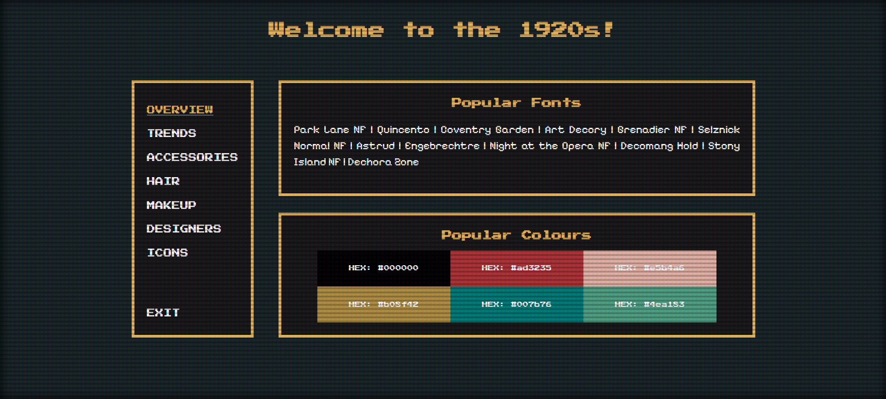

Ana Breahna
Fashion Time Machine

Project Link: https://birkbeck2.github.io/canary-web-project-AnaBrh/
Project Description:
An interactive 'Fashion Time Machine' website with a retro videogame design, where users navigate through decades (e.g., 1920s, 1960s) and learn about women's fashion history. This was made using JavaScript, HTML, and CSS, with DOM manipulation and JSON-based content loading.